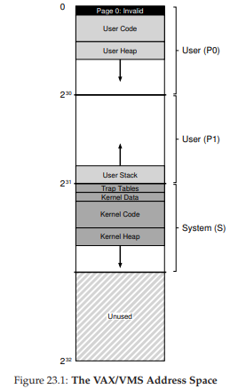

23. Hệ thống bộ nhớ ảo hoàn chỉnh (Complete Virtual Memory Systems)
Trước khi kết thúc việc nghiên cứu về virtualizing memory (ảo hóa bộ nhớ), chúng ta hãy xem xét kỹ hơn cách mà toàn bộ một hệ thống virtual memory (bộ nhớ ảo) được xây dựng. Chúng ta đã thấy các thành phần then chốt của những hệ thống như vậy, bao gồm nhiều thiết kế page table (bảng trang), sự tương tác với TLB (đôi khi còn được OS xử lý trực tiếp), và các chiến lược quyết định page nào giữ lại trong bộ nhớ và page nào loại bỏ. Tuy nhiên, còn nhiều tính năng khác tạo nên một hệ thống bộ nhớ ảo hoàn chỉnh, bao gồm nhiều đặc tính về hiệu năng, chức năng và bảo mật. Và đây là vấn đề mấu chốt:
THE CRUX: HOW TO BUILD A COMPLETE VM SYSTEM
(Làm thế nào để xây dựng một hệ thống bộ nhớ ảo hoàn chỉnh)
Những tính năng nào là cần thiết để hiện thực hóa một hệ thống bộ nhớ ảo hoàn chỉnh? Chúng cải thiện hiệu năng, tăng cường bảo mật hoặc cải thiện hệ thống theo những cách nào?
Chúng ta sẽ tìm hiểu điều này thông qua hai hệ thống. Hệ thống đầu tiên là một trong những ví dụ sớm nhất của một virtual memory manager (bộ quản lý bộ nhớ ảo) “hiện đại” — đó là hệ điều hành VAX/VMS [LL82], được phát triển trong những năm 1970 và đầu 1980; một số lượng đáng ngạc nhiên các kỹ thuật và phương pháp từ hệ thống này vẫn tồn tại đến ngày nay, vì vậy rất đáng để nghiên cứu. Một số ý tưởng, dù đã 50 năm tuổi, vẫn đáng để biết — điều này vốn quen thuộc trong nhiều lĩnh vực khác (ví dụ: Vật lý), nhưng lại cần được nhấn mạnh trong các ngành dựa trên công nghệ (ví dụ: Khoa học Máy tính). Hệ thống thứ hai là Linux, vì lý do hiển nhiên: Linux là một hệ thống được sử dụng rộng rãi, chạy hiệu quả từ các thiết bị nhỏ và yếu như điện thoại cho đến các hệ thống đa lõi có khả năng mở rộng cao trong các trung tâm dữ liệu hiện đại. Do đó, hệ thống VM của nó phải đủ linh hoạt để hoạt động thành công trong tất cả các kịch bản này. Chúng ta sẽ thảo luận từng hệ thống để minh họa cách các khái niệm đã trình bày ở các chương trước kết hợp lại thành một memory manager (bộ quản lý bộ nhớ) hoàn chỉnh.
23.1 VAX/VMS Virtual Memory
Kiến trúc VAX-11 thuộc dòng minicomputer được giới thiệu vào cuối những năm 1970 bởi Digital Equipment Corporation (DEC). DEC từng là một “ông lớn” trong ngành công nghiệp máy tính thời kỳ minicomputer; đáng tiếc là một loạt quyết định sai lầm cùng với sự xuất hiện của PC đã từ từ (nhưng chắc chắn) dẫn đến sự sụp đổ của họ [C03]. Kiến trúc này được hiện thực trong nhiều phiên bản, bao gồm VAX-11/780 và phiên bản yếu hơn là VAX-11/750.
Hệ điều hành cho hệ thống này được gọi là VAX/VMS (hoặc đơn giản là VMS), với một trong những kiến trúc sư chính là Dave Cutler, người sau này dẫn dắt việc phát triển Microsoft Windows NT [C93]. VMS phải đối mặt với vấn đề chung là nó sẽ chạy trên một dải rộng các loại máy, từ những máy VAX rất rẻ (vâng, “VAXen” là dạng số nhiều đúng) cho đến những máy cực kỳ mạnh mẽ trong cùng họ kiến trúc. Do đó, OS phải có các cơ chế và chính sách hoạt động tốt trên toàn bộ dải hệ thống này. Ngoài ra, VMS là một ví dụ điển hình về các cải tiến phần mềm được dùng để che giấu một số nhược điểm vốn có của kiến trúc phần cứng. Mặc dù OS thường dựa vào phần cứng để xây dựng các abstraction (trừu tượng) và illusion (ảo tưởng) hiệu quả, đôi khi các nhà thiết kế phần cứng không làm mọi thứ hoàn hảo; trong phần cứng VAX, chúng ta sẽ thấy một vài ví dụ về điều này, và cách mà VMS khắc phục để xây dựng một hệ thống hiệu quả, hoạt động tốt bất chấp các nhược điểm phần cứng.
Memory Management Hardware
VAX-11 cung cấp virtual address space 32-bit cho mỗi process (tiến trình), được chia thành các page 512 byte. Do đó, một virtual address bao gồm VPN (virtual page number) 23-bit và offset 9-bit. Hơn nữa, 2 bit cao nhất của VPN được dùng để phân biệt segment (đoạn) mà page thuộc về; do đó, hệ thống này là một dạng hybrid (lai) giữa paging và segmentation, như chúng ta đã thấy trước đây.
Nửa dưới của address space được gọi là process space và là duy nhất cho mỗi process. Trong nửa đầu của process space (gọi là P0), chứa chương trình người dùng và heap (vùng nhớ động) — heap này phát triển xuống dưới. Trong nửa sau của process space (P1), chứa stack (ngăn xếp) — stack này phát triển lên trên. Nửa trên của address space được gọi là system space (S), mặc dù chỉ một nửa của nó được sử dụng. OS code và dữ liệu được bảo vệ nằm ở đây, và theo cách này OS được chia sẻ giữa các process.
Một mối quan tâm lớn của các nhà thiết kế VMS là kích thước page cực kỳ nhỏ trong phần cứng VAX (512 byte). Kích thước này, được chọn vì lý do lịch sử, dẫn đến vấn đề cơ bản là làm cho linear page table (bảng trang tuyến tính) trở nên quá lớn. Do đó, một trong những mục tiêu đầu tiên của các nhà thiết kế VMS là đảm bảo rằng VMS sẽ không làm tràn bộ nhớ với page table. Hệ thống giảm áp lực của page table lên bộ nhớ theo hai cách.
Thứ nhất, bằng cách chia address space của người dùng thành hai phần, VAX-11 cung cấp một page table riêng cho mỗi vùng này (P0 và P1) trên mỗi process.
ASIDE: THE CURSE OF GENERALITY
(Lời nguyền của tính tổng quát)
Hệ điều hành thường gặp một vấn đề gọi là curse of generality (lời nguyền của tính tổng quát), khi chúng phải hỗ trợ chung cho một lớp ứng dụng và hệ thống rất rộng. Kết quả cơ bản của lời nguyền này là OS khó có thể hỗ trợ tốt cho bất kỳ cài đặt cụ thể nào. Trong trường hợp của VMS, lời nguyền này là rất thực tế, vì kiến trúc VAX-11 được hiện thực trong nhiều phiên bản khác nhau. Điều này cũng đúng cho đến ngày nay, khi Linux được kỳ vọng chạy tốt trên điện thoại, TV set-top box, laptop, desktop, và cả máy chủ cao cấp chạy hàng nghìn process trong một cloud-based datacenter (trung tâm dữ liệu dựa trên đám mây).
Nhờ vậy, không cần cấp phát không gian page table cho phần không sử dụng của address space giữa stack và heap. Base register (thanh ghi cơ sở) và bounds register (thanh ghi giới hạn) được sử dụng như mong đợi; base register giữ địa chỉ của page table cho segment đó, và bounds register giữ kích thước của nó (tức là số lượng page-table entry).
Thứ hai, OS giảm áp lực bộ nhớ hơn nữa bằng cách đặt user page table (cho P0 và P1, tức là hai bảng trên mỗi process) vào kernel virtual memory (bộ nhớ ảo của nhân). Do đó, khi cấp phát hoặc mở rộng page table, kernel sẽ cấp phát không gian từ chính virtual memory của nó, trong segment S. Nếu bộ nhớ bị áp lực nghiêm trọng, kernel có thể swap (hoán đổi) các page của page table này ra đĩa, giải phóng physical memory cho các mục đích khác.
Việc đặt page table vào kernel virtual memory khiến quá trình address translation (dịch địa chỉ) trở nên phức tạp hơn. Ví dụ, để dịch một virtual address trong P0 hoặc P1, phần cứng phải trước tiên tra cứu page-table entry cho page đó trong page table tương ứng (P0 hoặc P1 của process đó); tuy nhiên, để làm điều này, phần cứng có thể phải tham khảo system page table (nằm trong physical memory); sau khi dịch xong, phần cứng mới biết địa chỉ của page trong page table, và cuối cùng mới biết địa chỉ của dữ liệu cần truy cập. Tất cả những điều này, may mắn thay, is made faster by the VAX’s hardware-managed TLBs, which usually (hopefully) circumvent this laborious lookup.
Một không gian địa chỉ thực tế (A Real Address Space)
Một điểm thú vị khi nghiên cứu VMS là chúng ta có thể thấy cách một address space (không gian địa chỉ) thực tế được xây dựng (Figure 23.1). Cho đến nay, chúng ta giả định một address space đơn giản chỉ gồm user code (mã người dùng), user data (dữ liệu người dùng) và user heap (vùng nhớ động của người dùng), nhưng như có thể thấy, một address space thực tế phức tạp hơn đáng kể.
Ví dụ, code segment (đoạn code) không bao giờ bắt đầu tại page 0. Thay vào đó, page này được đánh dấu inaccessible (không thể truy cập), nhằm hỗ trợ việc phát hiện các truy cập null pointer (con trỏ null). Do đó, một mối quan tâm khi thiết kế address space là hỗ trợ debugging (gỡ lỗi), và page 0 không thể truy cập ở đây cung cấp một dạng hỗ trợ như vậy.
Quan trọng hơn, kernel virtual address space (không gian địa chỉ ảo của nhân — bao gồm cấu trúc dữ liệu và mã của kernel) là một phần của mỗi user address space. Khi context switch (chuyển ngữ cảnh), OS thay đổi các thanh ghi P0 và P1 để trỏ tới page table thích hợp của process sắp chạy; tuy nhiên, nó không thay đổi các thanh ghi S base và S bound, và do đó các cấu trúc kernel “giống nhau” được ánh xạ vào mỗi user address space.

Figure 23.1: The VAX/VMS Address Space
(Không gian địa chỉ của VAX/VMS)
Kernel được ánh xạ vào mỗi address space vì nhiều lý do. Cách xây dựng này giúp kernel dễ dàng hơn; ví dụ, khi OS nhận một pointer từ chương trình người dùng (ví dụ trong system call write()), việc sao chép dữ liệu từ con trỏ đó sang cấu trúc của kernel trở nên đơn giản. OS được viết và biên dịch một cách tự nhiên, không cần lo lắng dữ liệu nó truy cập đến từ đâu. Ngược lại, nếu kernel nằm hoàn toàn trong physical memory (bộ nhớ vật lý), sẽ rất khó thực hiện các thao tác như swap (hoán đổi) các page của page table ra đĩa; nếu kernel có address space riêng, việc di chuyển dữ liệu giữa ứng dụng người dùng và kernel sẽ lại phức tạp và tốn công. Với cách xây dựng này (hiện được sử dụng rộng rãi), kernel gần như xuất hiện như một thư viện đối với ứng dụng, dù là một thư viện được bảo vệ.
ASIDE: TẠI SAO TRUY CẬP NULL POINTER GÂY SEG FAULT
Giờ bạn nên hiểu rõ điều gì xảy ra khi dereference (giải tham chiếu) một null pointer. Một process tạo ra virtual address bằng 0, bằng cách làm như sau:int *p = NULL; // gán p = 0 // thử ghi giá trị 10 vào địa chỉ ảo 0 *p = 10;Phần cứng cố gắng tra VPN (cũng là 0) trong TLB, và gặp TLB miss. Page table được tra cứu, và entry cho VPN 0 được đánh dấu invalid (không hợp lệ). Do đó, đây là một truy cập không hợp lệ, dẫn đến việc chuyển quyền điều khiển cho OS, và OS có thể sẽ chấm dứt process (trên hệ thống UNIX, process sẽ nhận một signal cho phép nó phản ứng với lỗi này; nếu không bắt được signal, process sẽ bị kill).
Một điểm cuối cùng về address space này liên quan đến protection (bảo vệ). Rõ ràng, OS không muốn ứng dụng người dùng đọc hoặc ghi dữ liệu/mã của OS. Do đó, phần cứng phải hỗ trợ các mức bảo vệ khác nhau cho page để thực hiện điều này. VAX làm điều đó bằng cách chỉ định, trong các protection bit của page table, mức đặc quyền (privilege level) mà CPU phải có để truy cập một page cụ thể. Nhờ vậy, dữ liệu và mã hệ thống được đặt ở mức bảo vệ cao hơn dữ liệu và mã người dùng; mọi nỗ lực truy cập thông tin như vậy từ mã người dùng sẽ tạo ra một trap vào OS, và (bạn đoán đúng) khả năng cao là process vi phạm sẽ bị chấm dứt.
Page Replacement (Thay thế trang)
Page table entry (PTE) trong VAX chứa các bit sau:
- valid bit (bit hợp lệ)
- protection field (trường bảo vệ, 4 bit)
- modify bit (hoặc dirty bit)
- một trường dành riêng cho OS (5 bit)
- và cuối cùng là physical frame number (PFN) để lưu vị trí của page trong physical memory.
Người đọc tinh ý sẽ nhận ra: không có reference bit! Do đó, thuật toán thay thế của VMS phải hoạt động mà không có hỗ trợ phần cứng để xác định page nào đang hoạt động.
Các nhà phát triển cũng lo ngại về memory hogs — các chương trình sử dụng nhiều bộ nhớ và khiến các chương trình khác khó chạy. Hầu hết các chính sách chúng ta đã xem đều dễ bị ảnh hưởng bởi hiện tượng này; ví dụ, LRU là một chính sách toàn cục, không chia sẻ bộ nhớ công bằng giữa các process.
ASIDE: MÔ PHỎNG REFERENCE BIT
Thực tế, bạn không cần reference bit phần cứng để biết page nào đang được sử dụng trong hệ thống. Vào đầu những năm 1980, Babaoglu và Joy đã chỉ ra rằng protection bit trên VAX có thể được dùng để mô phỏng reference bit [BJ81]. Ý tưởng cơ bản: nếu muốn biết page nào đang được sử dụng, hãy đánh dấu tất cả page trong page table là inaccessible (không thể truy cập) (nhưng vẫn lưu thông tin về page nào thực sự có thể truy cập bởi process, có thể trong trường “reserved OS field” của PTE). Khi process truy cập một page, nó sẽ tạo ra một trap vào OS; OS sẽ kiểm tra xem page đó thực sự có thể truy cập không, và nếu có, khôi phục lại quyền bảo vệ bình thường (ví dụ: read-only hoặc read-write). Khi thay thế, OS có thể kiểm tra page nào vẫn bị đánh dấu inaccessible, từ đó biết page nào không được sử dụng gần đây.
Mấu chốt của việc “mô phỏng” reference bit là giảm overhead nhưng vẫn thu được thông tin tốt về việc sử dụng page. OS không được quá tích cực trong việc đánh dấu inaccessible (overhead sẽ cao), cũng không được quá thụ động (mọi page sẽ bị truy cập và OS lại không biết page nào nên loại bỏ).
Để giải quyết hai vấn đề này, các nhà phát triển đã đưa ra segmented FIFO replacement policy [RL81]. Ý tưởng đơn giản: mỗi process có một số lượng page tối đa có thể giữ trong bộ nhớ, gọi là resident set size (RSS). Mỗi page này được giữ trong một danh sách FIFO; khi process vượt quá RSS, page “first-in” sẽ bị loại bỏ. FIFO rõ ràng không cần hỗ trợ phần cứng, nên dễ triển khai.
Tất nhiên, pure FIFO không hoạt động quá tốt, như chúng ta đã thấy. Để cải thiện hiệu năng của FIFO, VMS giới thiệu hai second-chance list (danh sách cơ hội thứ hai) toàn cục, nơi page được đặt trước khi bị loại bỏ khỏi bộ nhớ: một global clean-page free list và một dirty-page list. Khi process P vượt quá RSS, một page bị loại khỏi FIFO của process; nếu clean (không bị sửa đổi), nó được đặt vào cuối clean-page list; nếu dirty (bị sửa đổi), nó được đặt vào cuối dirty-page list.
Nếu process Q khác cần một page trống, nó lấy page đầu tiên từ global clean list. Tuy nhiên, nếu process P ban đầu bị page fault trên page đó trước khi nó bị thu hồi, P sẽ lấy lại page từ clean (hoặc dirty) list, tránh được một lần truy cập đĩa tốn kém. Các second-chance list toàn cục càng lớn, thuật toán segmented FIFO càng tiệm cận hiệu năng của LRU [RL81].
Một tối ưu hóa khác trong VMS cũng giúp khắc phục kích thước page nhỏ. Với page nhỏ như vậy, disk I/O trong quá trình swapping có thể kém hiệu quả, vì đĩa hoạt động tốt hơn với các lần truyền lớn. Để làm I/O swapping hiệu quả hơn, VMS bổ sung một số tối ưu hóa, quan trọng nhất là clustering. Với clustering, VMS nhóm các lô page lớn từ global dirty list và ghi chúng ra đĩa trong một lần (biến chúng thành clean). Clustering được sử dụng trong hầu hết các hệ thống hiện đại, vì khả năng đặt page ở bất kỳ đâu trong swap space để cho OS có thể nhóm các pages, perform những lần write lớn hơn với số lượng ít hơn, và từ đó cải thiện performance.
Các thủ thuật thú vị khác (Other Neat Tricks)
VMS có hai thủ thuật khác, nay đã trở thành tiêu chuẩn: demand zeroing (khởi tạo trang bằng 0 khi cần) và copy-on-write (COW). Đây là những tối ưu hóa dạng “lười biếng” (lazy optimizations).
Một dạng “lười biếng” trong VMS (và hầu hết các hệ thống hiện đại) là demand zeroing các page. Để hiểu rõ hơn, hãy xét ví dụ thêm một page vào address space (không gian địa chỉ) của bạn, chẳng hạn trong heap. Trong một triển khai ngây thơ, OS sẽ đáp ứng yêu cầu thêm page vào heap bằng cách tìm một page trong physical memory (bộ nhớ vật lý), ghi toàn bộ bằng số 0 (yêu cầu này nhằm đảm bảo bảo mật; nếu không, bạn có thể thấy dữ liệu còn sót lại từ process khác đã dùng page này trước đó!), rồi ánh xạ nó vào address space của bạn (tức là thiết lập page table để trỏ tới physical page đó). Nhưng cách triển khai ngây thơ này có thể tốn kém, đặc biệt nếu page đó không bao giờ được process sử dụng.
Với demand zeroing, OS thay vào đó làm rất ít khi page được thêm vào address space; nó chỉ đặt một entry trong page table đánh dấu page là inaccessible (không thể truy cập). Nếu process sau đó đọc hoặc ghi vào page, một trap sẽ xảy ra và chuyển quyền điều khiển vào OS. Khi xử lý trap, OS nhận ra (thường thông qua một số bit được đánh dấu trong phần “reserved for OS” của page table entry) rằng đây thực chất là một demand-zero page; lúc này, OS mới thực hiện công việc cần thiết: tìm một physical page, ghi toàn bộ bằng 0, và ánh xạ nó vào address space của process. Nếu process không bao giờ truy cập page, toàn bộ công việc này được tránh, và đó chính là lợi ích của demand zeroing.
Một tối ưu hóa thú vị khác trong VMS (và gần như mọi OS hiện đại) là copy-on-write (COW). Ý tưởng, vốn xuất hiện ít nhất từ hệ điều hành TENEX [BB+72], rất đơn giản: khi OS cần sao chép một page từ address space này sang address space khác, thay vì sao chép, nó có thể ánh xạ page đó vào address space đích và đánh dấu read-only trong cả hai address space. Nếu cả hai chỉ đọc page này, không cần hành động gì thêm, và OS đã thực hiện một bản sao “nhanh” mà không di chuyển dữ liệu.
Tuy nhiên, nếu một trong hai address space thực sự cố ghi vào page, sẽ xảy ra trap vào OS. OS sẽ nhận ra đây là một COW page, và do đó (một cách lười biếng) cấp phát một page mới, sao chép dữ liệu vào đó, và ánh xạ page mới này vào address space của process gây fault. Process sau đó tiếp tục chạy và giờ có bản sao riêng của page.
COW hữu ích vì nhiều lý do. Bất kỳ dạng shared library (thư viện dùng chung) nào cũng có thể được ánh xạ copy-on-write vào address space của nhiều process, tiết kiệm bộ nhớ quý giá. Trong hệ thống UNIX, COW còn quan trọng hơn do ngữ nghĩa của fork() và exec(). Như bạn nhớ, fork() tạo một bản sao chính xác của address space của process gọi; với address space lớn, việc sao chép này chậm và tốn dữ liệu. Tệ hơn, hầu hết address space này sẽ bị ghi đè ngay sau đó bởi lệnh exec(), vốn thay thế address space của process gọi bằng address space của chương trình mới. Bằng cách thực hiện fork() theo kiểu copy-on-write, OS tránh được phần lớn việc sao chép không cần thiết, vẫn giữ đúng ngữ nghĩa và cải thiện hiệu năng.
TIP: BE LAZY
(Hãy “lười biếng”)
Sự “lười biếng” có thể là một đức tính, cả trong cuộc sống lẫn trong hệ điều hành. Lười biếng có thể trì hoãn công việc đến sau, điều này có lợi trong OS vì nhiều lý do. Thứ nhất, trì hoãn công việc có thể giảm độ trễ của thao tác hiện tại, cải thiện khả năng phản hồi; ví dụ, OS thường báo rằng thao tác ghi file đã thành công ngay lập tức, và chỉ thực sự ghi ra đĩa sau đó ở chế độ nền. Thứ hai, quan trọng hơn, lười biếng đôi khi loại bỏ hoàn toàn nhu cầu làm việc đó; ví dụ, trì hoãn ghi cho đến khi file bị xóa sẽ loại bỏ luôn việc ghi. Lười biếng cũng tốt trong đời sống: ví dụ, trì hoãn làm bài tập OS có thể giúp bạn tránh lỗi trong đề bài nhờ bạn học phát hiện; tuy nhiên, dự án khó mà bị hủy, nên quá lười có thể gây rắc rối, dẫn đến nộp muộn, điểm kém, và một giảng viên buồn. Đừng làm giảng viên buồn!
23.2 The Linux Virtual Memory System
(Hệ thống bộ nhớ ảo của Linux)
Giờ chúng ta sẽ thảo luận một số khía cạnh thú vị của hệ thống VM của Linux. Việc phát triển Linux được thúc đẩy bởi các kỹ sư thực sự giải quyết các vấn đề thực tế gặp phải trong môi trường sản xuất, và do đó nhiều tính năng đã dần được tích hợp, tạo thành một hệ thống bộ nhớ ảo đầy đủ chức năng và giàu tính năng.
Chúng ta sẽ không thể bàn hết mọi khía cạnh của Linux VM, nhưng sẽ đề cập đến những điểm quan trọng nhất, đặc biệt là những nơi nó vượt xa các hệ thống VM cổ điển như VAX/VMS. Chúng ta cũng sẽ cố gắng chỉ ra những điểm chung giữa Linux và các hệ thống cũ.
Trong phần này, chúng ta sẽ tập trung vào Linux cho Intel x86. Mặc dù Linux có thể và thực sự chạy trên nhiều kiến trúc bộ xử lý khác nhau, Linux trên x86 là triển khai phổ biến và quan trọng nhất, và do đó là trọng tâm của chúng ta.
The Linux Address Space
(Không gian địa chỉ của Linux)
Giống như các hệ điều hành hiện đại khác, và cũng giống VAX/VMS, một Linux virtual address space1 gồm hai phần: user portion (phần người dùng — nơi chứa mã chương trình người dùng, stack, heap và các phần khác) và kernel portion (phần nhân — nơi chứa mã kernel, stack, heap và các phần khác). Giống các hệ thống khác, khi context switch, phần user của address space hiện tại sẽ thay đổi; phần kernel thì giống nhau giữa các process. Giống các hệ thống khác, một chương trình chạy ở user mode không thể truy cập các kernel virtual page; chỉ bằng cách trap vào kernel và chuyển sang privileged mode mới có thể truy cập bộ nhớ này.
 Figure 23.2: The Linux Address Space
Figure 23.2: The Linux Address Space
(Không gian địa chỉ của Linux)
Trong Linux 32-bit cổ điển (tức là Linux với virtual address space 32-bit), ranh giới giữa phần user và kernel nằm tại địa chỉ 0xC0000000, tức là ở vị trí ba phần tư của address space. Do đó, các địa chỉ ảo từ 0 đến 0xBFFFFFFF là user virtual address; các địa chỉ còn lại (0xC0000000 đến 0xFFFFFFFF) thuộc kernel virtual address space. Linux 64-bit có cách chia tương tự nhưng tại các điểm hơi khác. Figure 23.2 minh họa một address space điển hình (đã giản lược).
Một điểm thú vị ở Linux là nó có hai loại kernel virtual address. Loại đầu tiên gọi là kernel logical addresses [O16]. Đây là phần bạn có thể coi là virtual address space “bình thường” của kernel; để có thêm bộ nhớ loại này, mã kernel chỉ cần gọi kmalloc. Hầu hết các cấu trúc dữ liệu của kernel nằm ở đây, như page table, per-process kernel stack, v.v. Không giống hầu hết bộ nhớ khác trong hệ thống, kernel logical memory không thể bị swap ra đĩa.
Điểm thú vị nhất của kernel logical addresses là mối liên hệ của chúng với physical memory. Cụ thể, có một ánh xạ trực tiếp giữa kernel logical addresses và phần đầu của physical memory. Ví dụ, kernel logical address 0xC0000000 ánh xạ tới physical address 0x00000000, 0xC0000FFF tới 0x00000FFF, v.v. Ánh xạ trực tiếp này có hai hệ quả:
- Dễ dàng dịch qua lại giữa kernel logical address và physical address; do đó, các địa chỉ này thường được coi như địa chỉ vật lý.
- Nếu một vùng bộ nhớ liên tục trong kernel logical address space, nó cũng liên tục trong physical memory. Điều này khiến bộ nhớ được cấp phát ở phần này của kernel address space phù hợp cho các thao tác cần physical memory liên tục để hoạt động đúng, chẳng hạn như truyền/nhận dữ liệu I/O giữa các thiết bị thông qua direct memory access (DMA) (Sẽ học trong phần 3 của cuốn sách này).
Loại địa chỉ kernel còn lại là kernel virtual address (địa chỉ ảo của nhân). Để cấp phát bộ nhớ kiểu này, mã trong kernel sẽ gọi một bộ cấp phát khác, vmalloc, hàm này trả về một con trỏ tới một vùng bộ nhớ virtually contiguous (liên tục về mặt địa chỉ ảo) với kích thước mong muốn. Không giống như kernel logical memory (bộ nhớ logic của nhân), kernel virtual memory thường không liên tục trong bộ nhớ vật lý; mỗi kernel virtual page có thể ánh xạ tới các physical page không liền kề (và do đó không phù hợp cho DMA — Direct Memory Access). Tuy nhiên, chính vì vậy mà loại bộ nhớ này dễ cấp phát hơn, và thường được dùng cho các buffer lớn, nơi việc tìm một khối bộ nhớ vật lý lớn, liên tục là rất khó khăn.
Trong Linux 32-bit, một lý do khác cho sự tồn tại của kernel virtual address là nó cho phép kernel truy cập nhiều hơn (xấp xỉ) 1 GB bộ nhớ. Trước đây, máy tính có ít bộ nhớ hơn nhiều, nên việc truy cập quá 1 GB không phải là vấn đề. Tuy nhiên, công nghệ phát triển và sớm xuất hiện nhu cầu cho phép kernel sử dụng lượng bộ nhớ lớn hơn. Kernel virtual address, nhờ không bị ràng buộc bởi ánh xạ một-một nghiêm ngặt tới physical memory, đã giúp điều này khả thi. Tuy nhiên, với sự chuyển dịch sang Linux 64-bit, nhu cầu này ít cấp bách hơn, vì kernel không còn bị giới hạn chỉ trong 1 GB cuối của virtual address space.
Page Table Structure (Cấu trúc bảng trang)
Vì chúng ta đang tập trung vào Linux trên kiến trúc x86, phần thảo luận sẽ xoay quanh loại cấu trúc page table mà x86 cung cấp, vì nó quyết định Linux có thể và không thể làm gì. Như đã đề cập, x86 cung cấp một cấu trúc page table nhiều cấp (multi-level page table) được phần cứng quản lý (hardware-managed), với một page table cho mỗi process (tiến trình); OS chỉ cần thiết lập các ánh xạ trong bộ nhớ, trỏ một thanh ghi đặc quyền (privileged register) tới đầu page directory, và phần cứng sẽ xử lý phần còn lại. OS tham gia, như mong đợi, khi tạo hoặc xóa process, và khi context switch, đảm bảo trong mỗi trường hợp rằng hardware MMU đang sử dụng đúng page table để thực hiện dịch địa chỉ.
Có lẽ thay đổi lớn nhất trong những năm gần đây là chuyển từ x86 32-bit sang x86 64-bit, như đã đề cập ngắn gọn ở trên. Giống như trong hệ thống VAX/VMS, 32-bit address space đã tồn tại từ lâu, và khi công nghệ thay đổi, nó bắt đầu trở thành giới hạn thực sự cho các chương trình. Virtual memory giúp việc lập trình hệ thống trở nên dễ dàng, nhưng với các hệ thống hiện đại chứa nhiều GB bộ nhớ, 32 bit không còn đủ để tham chiếu tới tất cả. Do đó, bước nhảy tiếp theo là cần thiết.
Việc chuyển sang 64-bit address ảnh hưởng đến cấu trúc page table trong x86 theo cách dễ đoán. Vì x86 sử dụng page table nhiều cấp, các hệ thống 64-bit hiện nay dùng bảng bốn cấp (four-level table). Tuy nhiên, toàn bộ không gian địa chỉ 64-bit chưa được sử dụng; mới chỉ dùng 48 bit thấp. Do đó, một virtual address có thể được hình dung như sau:
...
Như có thể thấy trong hình minh họa, 16 bit cao của virtual address không được sử dụng (và do đó không tham gia vào quá trình dịch địa chỉ), 12 bit thấp (do kích thước page 4 KB) được dùng làm offset (vì vậy được sử dụng trực tiếp, không cần dịch), để lại 36 bit ở giữa của virtual address tham gia vào quá trình dịch. Phần P1 của địa chỉ được dùng để đánh chỉ số vào page directory cao nhất, và quá trình dịch tiếp tục từ đó, từng cấp một, cho đến khi page table thực sự được đánh chỉ số bởi P4, trả về page table entry mong muốn.
Khi dung lượng bộ nhớ hệ thống tiếp tục tăng, nhiều phần hơn của không gian địa chỉ khổng lồ này sẽ được kích hoạt, dẫn đến cấu trúc page table năm cấp, và cuối cùng là sáu cấp. Hãy tưởng tượng: một lần tra cứu page table đơn giản có thể cần tới sáu cấp dịch địa chỉ, chỉ để tìm vị trí của một dữ liệu nào đó trong bộ nhớ.
Large Page Support (Hỗ trợ trang lớn)
Intel x86 cho phép sử dụng nhiều kích thước page, không chỉ page chuẩn 4 KB. Cụ thể, các thiết kế gần đây hỗ trợ page 2 MB và thậm chí 1 GB trong phần cứng. Do đó, theo thời gian, Linux đã phát triển để cho phép ứng dụng sử dụng các huge page (trang lớn, theo cách gọi trong thế giới Linux).
Việc sử dụng huge page, như đã gợi ý trước đó, mang lại nhiều lợi ích. Giống như trong VAX/VMS, điều này giúp giảm số lượng ánh xạ cần có trong page table; page càng lớn, số ánh xạ càng ít. Tuy nhiên, việc giảm số lượng page-table entry không phải là động lực chính của huge page; thay vào đó, lợi ích lớn nhất là cải thiện hành vi của TLB và hiệu năng liên quan. Khi một process sử dụng tích cực một lượng lớn bộ nhớ, nó nhanh chóng làm đầy TLB với các bản dịch địa chỉ. Nếu các bản dịch này là cho page 4 KB, chỉ một lượng nhỏ bộ nhớ tổng thể có thể được truy cập mà không gây ra TLB miss. Kết quả là, với các workload “big memory” hiện đại chạy trên máy có nhiều GB bộ nhớ, chi phí hiệu năng là đáng kể; nghiên cứu gần đây cho thấy một số ứng dụng tiêu tốn tới 10% chu kỳ CPU để xử lý TLB miss [B+13].
Huge page cho phép một process truy cập một vùng bộ nhớ lớn mà không gặp TLB miss, bằng cách sử dụng ít slot hơn trong TLB — đây là lợi ích chính. Ngoài ra, huge page còn có các lợi ích khác: đường xử lý khi TLB miss ngắn hơn, nghĩa là khi TLB miss xảy ra, nó được xử lý nhanh hơn. Thêm vào đó, việc cấp phát có thể khá nhanh (trong một số kịch bản), một lợi ích nhỏ nhưng đôi khi quan trọng.
TIP: CONSIDER INCREMENTALISM
(Hãy cân nhắc cách tiếp cận gia tăng)
Nhiều khi trong cuộc sống, bạn được khuyến khích trở thành một nhà cách mạng. “Hãy nghĩ lớn!”, họ nói. “Hãy thay đổi thế giới!”, họ hô hào. Và bạn có thể thấy tại sao điều đó hấp dẫn; trong một số trường hợp, những thay đổi lớn là cần thiết, và vì vậy việc thúc đẩy mạnh mẽ cho chúng là hợp lý. Và nếu bạn thử theo cách này, ít nhất họ có thể sẽ ngừng la hét vào bạn.Tuy nhiên, trong nhiều trường hợp, một cách tiếp cận chậm hơn, mang tính gia tăng có thể là điều đúng đắn nên làm. Ví dụ về Linux huge page trong chương này là một minh họa cho engineering incrementalism (cách tiếp cận kỹ thuật theo hướng gia tăng); thay vì giữ lập trường cứng nhắc và khẳng định rằng large page là tương lai, các nhà phát triển đã chọn cách tiếp cận thận trọng: trước tiên giới thiệu hỗ trợ chuyên biệt cho nó, tìm hiểu thêm về ưu và nhược điểm, và chỉ khi có lý do thực sự mới bổ sung hỗ trợ tổng quát cho tất cả ứng dụng.
Incrementalism, dù đôi khi bị coi thường, thường dẫn đến tiến bộ chậm rãi, có suy nghĩ và hợp lý. Khi xây dựng hệ thống, cách tiếp cận này có thể chính là điều bạn cần. Thực tế, điều này cũng có thể đúng trong cuộc sống.
Một khía cạnh thú vị trong việc Linux hỗ trợ huge page là cách nó được triển khai theo hướng gia tăng. Ban đầu, các nhà phát triển Linux biết rằng hỗ trợ này chỉ quan trọng với một số ít ứng dụng, chẳng hạn như các large database (cơ sở dữ liệu lớn) có yêu cầu hiệu năng nghiêm ngặt. Do đó, quyết định được đưa ra là cho phép ứng dụng explicitly request (yêu cầu rõ ràng) cấp phát bộ nhớ với large page (thông qua call mmap() hoặc shmget()). Bằng cách này, hầu hết ứng dụng sẽ không bị ảnh hưởng (và tiếp tục chỉ sử dụng page 4 KB); một số ít ứng dụng đòi hỏi cao sẽ phải thay đổi để dùng các giao diện này, nhưng với chúng thì điều đó là xứng đáng.
Gần đây hơn, khi nhu cầu cải thiện hành vi của TLB trở nên phổ biến hơn ở nhiều ứng dụng, các nhà phát triển Linux đã bổ sung transparent huge page support (hỗ trợ large page trong suốt). Khi tính năng này được bật, hệ điều hành sẽ tự động tìm cơ hội để cấp phát huge page (thường là 2 MB, nhưng trên một số hệ thống là 1 GB) mà không cần sửa đổi ứng dụng.
Huge page không phải không có chi phí. Chi phí tiềm ẩn lớn nhất là internal fragmentation (phân mảnh bên trong), tức là một page lớn nhưng chỉ được sử dụng thưa thớt. Dạng lãng phí này có thể làm đầy bộ nhớ với các page lớn nhưng ít được dùng. Swapping, nếu được bật, cũng hoạt động không tốt với huge page, đôi khi làm tăng đáng kể lượng I/O mà hệ thống thực hiện. Overhead của việc cấp phát cũng có thể tệ (trong một số trường hợp khác). Nhìn chung, một điều rõ ràng: kích thước page 4 KB, vốn phục vụ hệ thống rất tốt trong nhiều năm, không còn là giải pháp phổ quát như trước; dung lượng bộ nhớ ngày càng tăng đòi hỏi chúng ta phải cân nhắc large page và các giải pháp khác như một phần của sự tiến hóa tất yếu của hệ thống VM (virtual memory). Việc Linux chậm rãi áp dụng công nghệ dựa trên phần cứng này là bằng chứng cho sự thay đổi sắp tới.
The Page Cache
(Bộ nhớ đệm trang)
Để giảm chi phí truy cập persistent storage (lưu trữ lâu dài — nội dung trọng tâm của phần ba cuốn sách này), hầu hết các hệ thống sử dụng các caching subsystem (hệ thống con bộ nhớ đệm) mạnh mẽ để giữ các mục dữ liệu phổ biến trong bộ nhớ. Linux, về mặt này, không khác gì các hệ điều hành truyền thống.
Linux page cache là thống nhất, giữ các page trong bộ nhớ từ ba nguồn chính:
- Memory-mapped files (các tệp được ánh xạ vào bộ nhớ)
- File data và metadata từ thiết bị (thường được truy cập thông qua các call
read()vàwrite()tới file system) - Heap và stack page tạo thành mỗi process (đôi khi gọi là anonymous memory, vì không có tệp được đặt tên bên dưới, mà thay vào đó là swap space).
Các thực thể này được lưu trong một page cache hash table, cho phép tra cứu nhanh khi cần dữ liệu.
Page cache theo dõi xem các entry là clean (đã đọc nhưng chưa cập nhật) hay dirty (hay còn gọi là modified — đã sửa đổi). Dữ liệu dirty được ghi định kỳ ra backing store (tức là ra tệp cụ thể đối với dữ liệu tệp, hoặc ra swap space đối với vùng anonymous) bởi các background thread (luồng nền) gọi là pdflush, đảm bảo rằng dữ liệu đã sửa đổi cuối cùng sẽ được ghi trở lại lưu trữ lâu dài. Hoạt động nền này diễn ra sau một khoảng thời gian nhất định hoặc khi có quá nhiều page bị coi là dirty (cả hai đều là tham số cấu hình được).
Trong một số trường hợp, hệ thống bị thiếu bộ nhớ, và Linux phải quyết định page nào cần loại bỏ khỏi bộ nhớ để giải phóng không gian. Để làm điều này, Linux sử dụng một dạng sửa đổi của 2Q replacement [JS94], được mô tả dưới đây.
Ý tưởng cơ bản rất đơn giản: standard LRU replacement (thay thế LRU tiêu chuẩn) hiệu quả, nhưng có thể bị phá vỡ bởi một số mẫu truy cập phổ biến. Ví dụ, nếu một process liên tục truy cập một tệp lớn (đặc biệt là tệp gần bằng hoặc lớn hơn kích thước bộ nhớ), LRU sẽ loại bỏ mọi tệp khác khỏi bộ nhớ. Tệ hơn: giữ lại một phần của tệp này trong bộ nhớ cũng không hữu ích, vì chúng không bao giờ được truy cập lại trước khi bị loại bỏ.
Phiên bản 2Q replacement của Linux giải quyết vấn đề này bằng cách giữ hai danh sách và chia bộ nhớ giữa chúng. Khi được truy cập lần đầu, một page được đặt vào một hàng đợi (gọi là A1 trong bài báo gốc, nhưng là inactive list trong Linux); khi được truy cập lại, page được promote (thăng hạng) sang hàng đợi khác (gọi là Aq trong bài báo gốc, nhưng là active list trong Linux). Khi cần thay thế, ứng viên bị loại bỏ được lấy từ inactive list. Linux cũng định kỳ di chuyển các page từ cuối active list sang inactive list, giữ active list ở mức khoảng hai phần ba tổng kích thước page cache [G04].
Lý tưởng nhất, Linux sẽ quản lý các danh sách này theo thứ tự LRU hoàn hảo, nhưng như đã thảo luận ở các chương trước, làm như vậy là tốn kém. Do đó, giống như nhiều OS khác, một approximation of LRU (xấp xỉ LRU) — tương tự như clock replacement — được sử dụng.
Cách tiếp cận 2Q này nhìn chung hoạt động khá giống LRU, nhưng đặc biệt xử lý tốt trường hợp truy cập tuần hoàn một tệp lớn bằng cách giới hạn các page của truy cập tuần hoàn đó trong inactive list. Vì các page này không bao giờ được truy cập lại trước khi bị loại bỏ, chúng không làm “trôi” các page hữu ích khác trong active list ra khỏi bộ nhớ.
ASIDE: THE UBIQUITY OF MEMORY-MAPPING
(Tính phổ biến của kỹ thuật ánh xạ bộ nhớ)
Kỹ thuật memory mapping (ánh xạ bộ nhớ) đã xuất hiện trước Linux nhiều năm, và được sử dụng ở nhiều nơi trong Linux cũng như các hệ thống hiện đại khác. Ý tưởng rất đơn giản: bằng cách gọimmap()trên một file descriptor (bộ mô tả tệp) đã được mở, một process (tiến trình) sẽ nhận về một con trỏ trỏ tới phần đầu của một vùng virtual memory (bộ nhớ ảo) nơi nội dung của tệp được “đặt” vào. Sau đó, bằng cách sử dụng con trỏ này, process có thể truy cập bất kỳ phần nào của tệp chỉ bằng một thao tác pointer dereference (giải tham chiếu con trỏ).Các truy cập tới những phần của tệp được ánh xạ bộ nhớ nhưng chưa được nạp vào bộ nhớ sẽ kích hoạt page fault (lỗi trang), tại thời điểm đó OS sẽ nạp (page in) dữ liệu liên quan và làm cho nó khả dụng bằng cách cập nhật page table (bảng trang) của process tương ứng (tức là demand paging — phân trang theo yêu cầu).
Mọi process Linux thông thường đều sử dụng memory-mapped file, ngay cả khi mã trong
main()không trực tiếp gọimmap(), bởi vì cách Linux nạp mã từ tệp thực thi và mã từ shared library (thư viện dùng chung) vào bộ nhớ. Dưới đây là kết quả (đã rút gọn nhiều) của công cụ dòng lệnhpmap, cho thấy các ánh xạ khác nhau tạo thành virtual address space của một chương trình đang chạy (trong ví dụ này là shelltcsh). Kết quả hiển thị bốn cột: địa chỉ ảo của ánh xạ, kích thước của nó, các protection bit (bit bảo vệ) của vùng, và nguồn của ánh xạ:0000000000400000 372K r-x-- tcsh 00000000019d5000 1780K rw-- [anon ] 00007f4e7cf06000 1792K r-x-- libc-2.23.so 00007f4e7d2d0000 36K r-x-- libcrypt-2.23.so 00007f4e7d508000 148K r-x-- libtinfo.so.5.9 00007f4e7d731000 152K r-x-- ld-2.23.so 00007f4e7d932000 16K rw-- [stack ]Như bạn thấy từ kết quả này, mã từ tệp thực thi
tcsh, cũng như mã từlibc,libcrypt,libtinfo, và mã từ dynamic linker (ld.so) đều được ánh xạ vào address space. Ngoài ra còn có hai vùng anonymous (ẩn danh): heap (mục thứ hai, được gắn nhãnanon) và stack (được gắn nhãnstack). Memory-mapped file cung cấp cho OS một cách đơn giản và hiệu quả để xây dựng một address space hiện đại.
Security And Buffer Overflows
(Bảo mật và tràn bộ đệm)
Có lẽ sự khác biệt lớn nhất giữa các hệ thống VM (virtual memory) hiện đại (Linux, Solaris, hoặc một trong các biến thể BSD) và các hệ thống cũ (VAX/VMS) là sự nhấn mạnh vào security (bảo mật) trong thời đại ngày nay. Protection (bảo vệ) luôn là một mối quan tâm nghiêm túc đối với hệ điều hành, nhưng với việc các máy tính ngày càng kết nối nhiều hơn, không có gì ngạc nhiên khi các nhà phát triển đã triển khai nhiều biện pháp phòng thủ để ngăn chặn những hacker tinh vi chiếm quyền điều khiển hệ thống.
Một mối đe dọa lớn là buffer overflow attack (tấn công tràn bộ đệm)2, có thể được sử dụng chống lại các chương trình người dùng thông thường và thậm chí cả kernel. Ý tưởng của các cuộc tấn công này là tìm một lỗi trong hệ thống mục tiêu cho phép kẻ tấn công chèn dữ liệu tùy ý vào address space của mục tiêu. Những lỗ hổng như vậy đôi khi xuất hiện vì lập trình viên giả định sai rằng một đầu vào sẽ không quá dài, và do đó (một cách tin tưởng) sao chép đầu vào vào một buffer; vì đầu vào thực tế quá dài, nó tràn ra ngoài buffer, ghi đè lên vùng nhớ của mục tiêu. Đoạn code tưởng chừng vô hại dưới đây có thể là nguồn gốc của vấn đề:
int some_function(char *input) {
char dest_buffer[100];
strcpy(dest_buffer, input); // oops, unbounded copy!
}
Trong nhiều trường hợp, một tràn bộ đệm như vậy không gây hậu quả nghiêm trọng, ví dụ: dữ liệu đầu vào xấu được đưa vào một chương trình người dùng hoặc thậm chí OS có thể chỉ khiến nó bị crash, nhưng không tệ hơn. Tuy nhiên, các lập trình viên độc hại có thể cẩn thận tạo ra dữ liệu đầu vào tràn bộ đệm để chèn mã của riêng họ vào hệ thống mục tiêu, về cơ bản cho phép họ chiếm quyền điều khiển và thực thi ý đồ riêng. Nếu tấn công thành công vào một chương trình người dùng có kết nối mạng, kẻ tấn công có thể chạy các tính toán tùy ý hoặc thậm chí “cho thuê” chu kỳ CPU của hệ thống bị xâm nhập; nếu tấn công thành công vào chính hệ điều hành, cuộc tấn công có thể truy cập nhiều tài nguyên hơn nữa, và đây là một dạng privilege escalation (leo thang đặc quyền — tức là mã người dùng giành được quyền truy cập của kernel). Như bạn có thể đoán, đây đều là những điều rất tệ.
Biện pháp phòng thủ đầu tiên và đơn giản nhất chống lại buffer overflow là ngăn chặn việc thực thi bất kỳ mã nào nằm trong một số vùng nhất định của address space (ví dụ: trong stack). NX bit (No-eXecute), được AMD giới thiệu vào phiên bản x86 của họ (Intel cũng có bit tương tự gọi là XD bit), là một biện pháp như vậy; nó chỉ đơn giản ngăn việc thực thi từ bất kỳ page nào có bit này được đặt trong page table entry tương ứng. Cách tiếp cận này ngăn mã được kẻ tấn công chèn vào stack của mục tiêu khỏi bị thực thi, và do đó giảm thiểu vấn đề.
Tuy nhiên, kẻ tấn công thông minh thì… rất thông minh, và ngay cả khi mã chèn vào không thể được thêm trực tiếp, các chuỗi lệnh tùy ý vẫn có thể được thực thi bởi mã độc. Ý tưởng này, ở dạng tổng quát nhất, được gọi là return-oriented programming (ROP) [S07], và thực sự là một kỹ thuật rất tinh vi. Quan sát đằng sau ROP là trong bất kỳ address space của chương trình nào cũng có rất nhiều đoạn code nhỏ (gọi là gadget trong thuật ngữ ROP), đặc biệt là các chương trình C liên kết với thư viện C khổng lồ. Do đó, kẻ tấn công có thể ghi đè stack sao cho return address trong hàm đang thực thi trỏ tới một lệnh độc hại mong muốn (hoặc một chuỗi lệnh), theo sau là một lệnh return. Bằng cách xâu chuỗi một số lượng lớn gadget (tức là đảm bảo mỗi lệnh return nhảy tới gadget tiếp theo), kẻ tấn công có thể thực thi mã tùy ý. Thật đáng kinh ngạc!
Để phòng chống ROP (bao gồm cả dạng trước đó là return-to-libc attack [S+04]), Linux (và các hệ thống khác) bổ sung một biện pháp phòng thủ khác, gọi là address space layout randomization (ASLR). Thay vì đặt code, stack và heap ở các vị trí cố định trong virtual address space, OS sẽ randomize (ngẫu nhiên hóa) vị trí của chúng, khiến việc tạo ra chuỗi mã phức tạp cần thiết để thực hiện loại tấn công này trở nên khó khăn hơn nhiều. Hầu hết các cuộc tấn công vào chương trình người dùng dễ bị tổn thương sẽ chỉ gây crash, nhưng không thể chiếm quyền điều khiển chương trình đang chạy.
Điều thú vị là bạn có thể quan sát sự ngẫu nhiên này trong thực tế khá dễ dàng. Dưới đây là một đoạn code minh họa điều đó trên một hệ thống Linux hiện đại:
Đoạn code này chỉ đơn giản in ra địa chỉ (ảo) của một biến trên stack. Trong các hệ thống cũ không có ASLR (Address Space Layout Randomization — ngẫu nhiên hóa bố cục không gian địa chỉ), giá trị này sẽ giống nhau mỗi lần chạy. Nhưng như bạn thấy bên dưới, giá trị thay đổi theo từng lần chạy:
prompt> ./random
0x7ffd3e55d2b4
prompt> ./random
0x7ffe1033b8f4
prompt> ./random
0x7ffe45522e94
ASLR là một cơ chế phòng thủ hữu ích đến mức nó đã được tích hợp cả vào kernel, trong một tính năng có tên khá trực diện là kernel address space layout randomization (KASLR). Tuy nhiên, hóa ra kernel còn có những vấn đề bảo mật lớn hơn cần xử lý, như chúng ta sẽ bàn tiếp theo.
Other Security Problems: Meltdown And Spectre
(Các vấn đề bảo mật khác: Meltdown và Spectre)
Tại thời điểm viết những dòng này (tháng 8 năm 2018), thế giới systems security (bảo mật hệ thống) đã bị đảo lộn bởi hai cuộc tấn công mới và có liên quan đến nhau. Cuộc tấn công đầu tiên được gọi là Meltdown, và cuộc thứ hai là Spectre. Chúng được phát hiện gần như cùng lúc bởi bốn nhóm nhà nghiên cứu/kỹ sư khác nhau, và đã dẫn đến những nghi vấn sâu sắc về các cơ chế bảo vệ cơ bản mà phần cứng máy tính và hệ điều hành cung cấp. Xem spectreattack.com để đọc các bài báo mô tả chi tiết từng cuộc tấn công; Spectre được xem là vấn đề nghiêm trọng hơn trong hai cái.
Điểm yếu chung bị khai thác trong cả hai cuộc tấn công này là việc các CPU trong hệ thống hiện đại thực hiện nhiều kỹ thuật “hậu trường” phức tạp để cải thiện hiệu năng. Một lớp kỹ thuật nằm ở trung tâm của vấn đề được gọi là speculative execution (thực thi dự đoán), trong đó CPU đoán các lệnh nào sẽ được thực thi trong tương lai gần và bắt đầu thực thi chúng trước. Nếu dự đoán đúng, chương trình chạy nhanh hơn; nếu sai, CPU sẽ hoàn tác các tác động của chúng lên architectural state (trạng thái kiến trúc — ví dụ: các thanh ghi) và thử lại, lần này đi theo nhánh đúng.
Vấn đề với speculative execution là nó thường để lại dấu vết của quá trình thực thi trong nhiều thành phần của hệ thống, như processor cache, branch predictor, v.v. Và đây chính là vấn đề: như các tác giả của các cuộc tấn công đã chỉ ra, trạng thái này có thể khiến nội dung bộ nhớ bị lộ, ngay cả những vùng bộ nhớ mà chúng ta nghĩ rằng đã được MMU bảo vệ.
Một hướng tiếp cận để tăng cường bảo vệ kernel là loại bỏ càng nhiều càng tốt phần kernel address space khỏi mỗi user process và thay vào đó sử dụng một kernel page table riêng cho hầu hết dữ liệu của kernel (gọi là kernel page-table isolation, hay KPTI) [G+17]. Như vậy, thay vì ánh xạ mã và cấu trúc dữ liệu của kernel vào mỗi process, chỉ giữ lại phần tối thiểu cần thiết; khi chuyển vào kernel, hệ thống sẽ chuyển sang kernel page table. Cách làm này cải thiện bảo mật và tránh được một số hướng tấn công, nhưng phải trả giá: hiệu năng. Việc chuyển đổi page table là tốn kém. Đó chính là cái giá của bảo mật: sự tiện lợi và hiệu suất.
Đáng tiếc, KPTI không giải quyết được tất cả các vấn đề bảo mật đã nêu ở trên, chỉ một phần trong số đó. Và các giải pháp đơn giản như tắt speculative execution sẽ không hợp lý, vì hệ thống sẽ chạy chậm hơn hàng nghìn lần. Vì vậy, đây là một thời điểm thú vị để sống, nếu bạn quan tâm đến bảo mật hệ thống.
Để thực sự hiểu các cuộc tấn công này, bạn (có lẽ) sẽ phải học thêm nhiều điều trước tiên. Hãy bắt đầu bằng việc tìm hiểu kiến trúc máy tính hiện đại, như được trình bày trong các sách nâng cao về chủ đề này, tập trung vào speculative execution và tất cả các cơ chế cần thiết để triển khai nó. Chắc chắn hãy đọc về các cuộc tấn công Meltdown và Spectre tại các trang web đã đề cập ở trên; chúng cũng bao gồm phần giới thiệu hữu ích về speculative execution, vì vậy có thể là điểm khởi đầu không tồi. Và hãy nghiên cứu hệ điều hành để tìm thêm các lỗ hổng tiềm ẩn. Ai biết được còn những vấn đề gì đang tồn tại?
23.3 Summary
(Tóm tắt)
Bạn vừa xem một cái nhìn tổng quan từ trên xuống dưới về hai hệ thống virtual memory (bộ nhớ ảo). Hy vọng rằng hầu hết các chi tiết đều dễ theo dõi, vì bạn đã có hiểu biết tốt về các cơ chế và chính sách cơ bản. Thông tin chi tiết hơn về VAX/VMS có trong bài báo xuất sắc (và ngắn gọn) của Levy và Lipman [LL82]. Chúng tôi khuyến khích bạn đọc nó, vì đây là cách tuyệt vời để thấy được nguồn tài liệu gốc đằng sau các chương này.
Bạn cũng đã tìm hiểu đôi chút về Linux. Dù là một hệ thống lớn và phức tạp, nó kế thừa nhiều ý tưởng hay từ quá khứ, nhiều ý tưởng trong số đó chúng tôi chưa có dịp bàn chi tiết. Ví dụ, Linux thực hiện lazy copy-on-write khi sao chép page trong fork(), nhờ đó giảm overhead bằng cách tránh sao chép không cần thiết. Linux cũng demand zero các page (sử dụng memory-mapping của thiết bị /dev/zero), và có một background swap daemon (swapd) để hoán đổi page ra đĩa nhằm giảm áp lực bộ nhớ. Thật vậy, hệ thống VM chứa đầy những ý tưởng hay được lấy từ quá khứ, đồng thời cũng bao gồm nhiều cải tiến riêng.
Để tìm hiểu thêm, hãy tham khảo những cuốn sách hợp lý (nhưng tiếc là đã lỗi thời) [BC05, G04]. Chúng tôi khuyến khích bạn tự đọc, vì chúng tôi chỉ có thể cung cấp một giọt nước trong đại dương phức tạp này. Nhưng, bạn phải bắt đầu từ đâu đó. Và, “một đại dương chẳng qua cũng chỉ là tập hợp của vô số giọt nước” [M04].